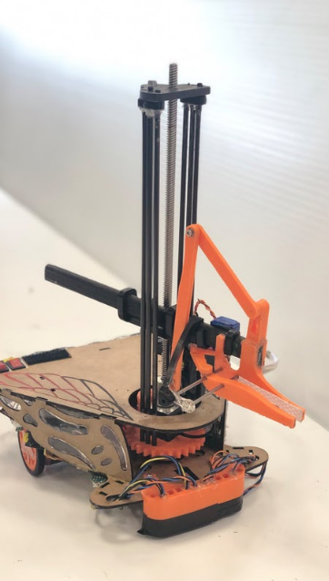
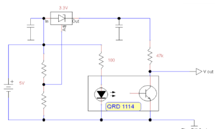
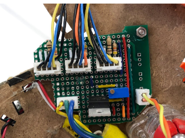
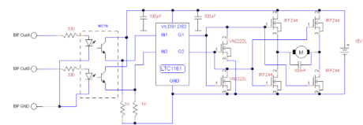
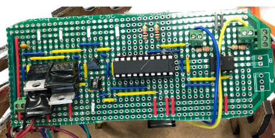
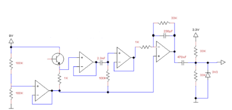
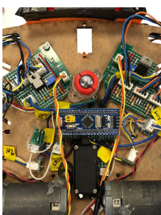
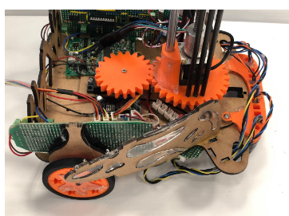
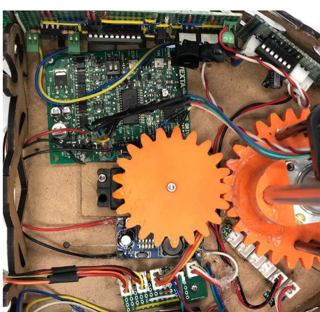

Introducing: Redwing, Our completely autonomous robot.

Overview
In the summer of 2019, I worked in a team of three to build an autonomous robot able to navigate an obstacle course and pick up objects, to take part in the ENPH 253 robot competition. I built the entire electrical system for the robot, while the other two in my team focused on the mechanical design, and the software. We used a Bluepill micro-controller for this project. The circuits I constructed were
- QRD sensor inputs
- H-bridge motor drivers
- IR sensor
- a rotary encoder with a de-bouncing filter
A selection of the circuits are shown below:
QRD Sensors


To navigate the course, the robot was made to follow a black tape by sensing the black line by using QRD's. The Bluepill's inputs only take up to 3.3 volts, and so, we used a zener diode to protect the ports from the 5V source. The potentiometer adjusts the sensitivity and range the QRD can sense to.
In the image to the left, the JST connectors lead to the QRD's. In this circuit, we connected three QRD's in parallel, for the best optimization of space.
H-Bridges


This circuit was connected to each motor to ensure that the motor was able to rotate in both directions from the output of the bluepill.

IR detection circuit
This image features the schematic of the IR detection circuit, which would detect soft objects placed randomly on the ground. The circuit was build, debugged, and verified, but we did not implement it on our robot because we decided to focus on QRD detection instead.

Bluepill and QRD circuits
This image features the underside of the robot, where we placed the QRD circuits and the BluePill to optimize space.

H-Bridge on robot
This image features the top shell of the robot, including where we placed the H-Bridge, multiplexer, and other motor drivers.
